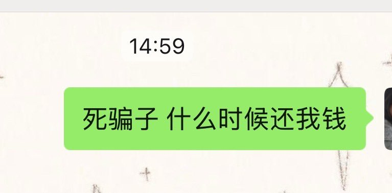

困困鱼崽仔小云
@kunkunyuzaizai
@eek1k1 我被骗了1.4K我前两个月就赚了1900 他说要回老家才能解开银行卡👿👿😭😭😭😭 我的苹果16E啊原本我就用上了现在我还得多等一个月 工资太低了 压一个月才发而且素 之前也被骗过但不多有两块的十块的

宝子你继续
@eek1k1
这是我玩互联网被骗的最惨的一次，大半年了我都无法释怀！这是刚玩推特那会儿认识的门槛哥，几十块钱过的门槛，我后面给他转了几千块。。一直在给我卖惨，说自己生病了，跟家里人关系不好、跟喜欢的女生没法在一起、手头没钱了，诸如此类的话。 https://t.co/QIFMXqOcsz